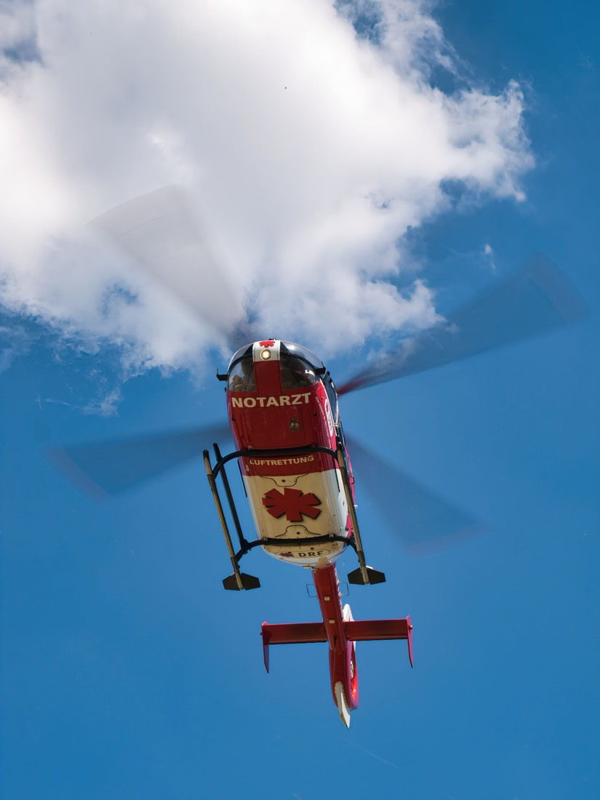

Obstacle-rapportering for luftrommet
Piloter melder inn hindringer som kraner og kraftledninger, slik at flysikkerheten blir bedre.
Delt 1. plass av 23 grupper · EXPO 2025
Et webbasert system for å rapportere og validere hindringer i luftrommet. Piloter melder inn hindringer på kartet. Registerførere behandler dem, og administratorer styrer brukere og arkiv.
Hver hindring får en status: under behandling, godkjent eller avslått. Avslåtte hindringer flyttes til arkivet, og admin kan gjenopprette dem.
- PilotMelder inn hindringer på kartet
- RegisterførerGodkjenner eller avslår rapportene
- AdministratorStyrer brukere og arkiv
Prøv selv: rapporter en hindring
Du har sett en hindring fra lufta og vil melde den inn.
Velg Punkt eller Linje, klikk i kartet og fyll ut skjemaet.
Godkjenn eller avslå rapporten som registerfører, og se hvordan statusen endres.
Kartet er en forenklet illustrasjon av Agder-kysten. Ingenting du sender inn lagres.
- 1Velg verktøy
- 2Tegn på kartet
- 3Fyll ut skjema
- 4Send inn
Neste stegVelg Punkt eller Linje for å starte.